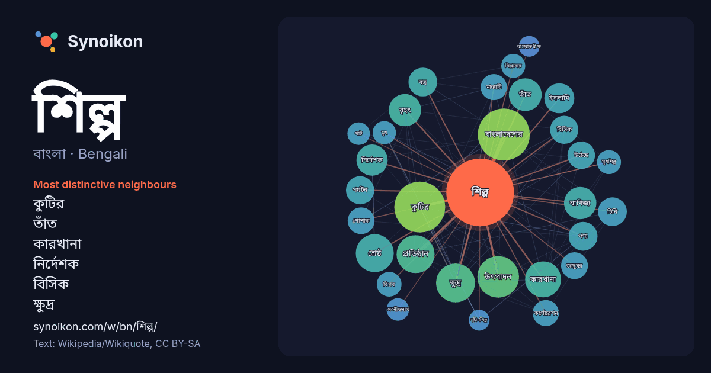

বাংলা · Bengali · popular word
শিল্প
“art” · The words found around it in 1617 instances from Bengali Wikipedia, Wikiquote.

Most distinctive neighbours
- কুটির 58×
- তাঁত 27×
- কারখানা 23×
- নির্দেশক 22×
- বিসিক 21×
- ক্ষুদ্র 19×
- বস্ত্র 19×
- চিনি 18×
- শ্রেষ্ঠ 17×
- ইসলামি 16×
- উৎপাদন 16×
- মৃৎ 15×
- মৃৎশিল্প 15×
- অবনীন্দ্রনাথ 14×
- মাঝারি 14×
- জাদুঘর 14×
- পর্যটন 14×
- বাংলাদেশের 14×
- কর্পোরেশন 13×
- বৃহৎ 13×
× = how many times more often than in general Bengali Wikipedia text.
Most frequent neighbours
- চলচ্চিত্র 80
- বাংলাদেশের 75
- কুটির 72
- প্রধান 58
- বাংলাদেশ 55
- উৎপাদন 48
- গড়ে 48
- ক্ষুদ্র 42
- তৈরি 42
- প্রতিষ্ঠান 40
- শ্রেষ্ঠ 40
- অন্যতম 37
- একজন 36
- কারখানা 36
- গুরুত্বপূর্ণ 35
- নির্মাণ 31
- আধুনিক 30
- তাঁত 30
- বাণিজ্য 29
- বৃহৎ 29
In context
- শিল্প বলতে বোঝাতে পারে: শিল্পকলা, মানুষের নান্দনিক সৃজনশীল কর্মকাণ্ড শিল্পকলার শাখাসমূহ শিল্প (অর্থশাস্ত্র), অর্থনীতির একটি শাখা যা সমপ্রকারের অর্থনৈতিক Wikipedia snippets · শিল্প (দ্ব্যর্থতা নিরসন)
- জটিল শিল্প কারণ কারণ এই শিল্পের বিস্তৃতি অনেক বেশি ছড়ানো এবং নানান দেশের মুসলিম ১৪০০ বছর ধরে এই শিল্পের চর্চা করছে; এটা শুধু একটা বিশেষ গোষ্ঠীর শিল্প নয় Wikipedia snippets · ইসলামি শিল্প
- রাসায়নিক শিল্প হচ্ছে কারখানাজাত রাসায়নিক পদার্থ উৎপাদনের কোম্পানি। বিশ্বের অর্থনীতির কেন্দ্রে থাকা এই শিল্পে বিভিন্ন ধরনের কাঁচামালকে (তেল, প্রাকৃতিক Wikipedia snippets · রাসায়নিক শিল্প
- বাংলাদেশে ওষুধ শিল্পের যাত্রা শুরু হয় পঞ্চাশের দশকের শুরুতে, একাত্তরের স্বাধীনতার কিছুদিন পর বাংলাদেশ ওষুধ উৎপাদন শুরু করে। তখন এ শিল্প এতটা উন্নত ছিলনা। Wikipedia snippets · বাংলাদেশের ঔষধ শিল্প
- ঔষধনির্মাণ শিল্প বা সংক্ষেপে ঔষধ শিল্প একটি বৃহৎ শিল্প যার দায়িত্ব মানুষ ও পশুর জন্য ব্যবহারযোগ্য ঔষধ আবিষ্কার, উদ্ভাবন, নির্মাণ, শিল্পোৎপাদন ও বাজারজাতকরণ। Wikipedia snippets · ঔষধনির্মাণ শিল্প
- টেলিযোগাযোগ শিল্প, মোটরযান নির্মাণ শিল্প, খনিজ তেল ও গ্যাস অনুসন্ধান ও উৎপাদন শিল্প, খাদ্য শিল্প, তথ্য প্রযুক্তি শিল্প, জীবন ও স্বাস্থ্য বীমা শিল্প, ইন্টারনেট Wikipedia snippets · শিল্প (অর্থনীতি)
- শিল্পের কিছু উদাহরণ হাইড্রোজেন জ্বালানি উৎপাদন, পেট্রোরসায়ন শিল্প, খাদ্য প্রক্রিয়াকরণ শিল্প, মহাশূন্য পর্যটন, এবং অনলাইন বিশ্বকোষ। সূর্যাস্ত শিল্প "What Wikipedia snippets · সূর্যোদয় শিল্প
- ও কুটির শিল্প কর্পোরেশন (বিসিক) বাংলাদেশ সরকারের শিল্প মন্ত্রণালয়ের আওতাধীন একটি স্বায়ত্তশাসিত প্রতিষ্ঠান যা বাংলাদেশে ক্ষুদ্র ও কুটির শিল্প বিকাশের Wikipedia snippets · বাংলাদেশ ক্ষুদ্র ও কুটির শিল্প কর্পোরেশন
More Bengali words
- অরণ্য
- আয়না
- ইতিহাস
- ঈশ্বর
- কাজ
- কুকুর
- ক্ষমতা
- খাদ্য
- গান
- গ্রীষ্ম
- ঘড়ি
- ঘণ্টা
- ঘোড়া
- ছায়া
- জননী
- জলবায়ু
- জীবন
- ঝড়
- টাকা
- ট্রেন
- দারুচিনি
- দ্বীপ
- নক্ষত্র
- নীরবতা
- পরিবার
- পানি
- পাহাড়
- প্রকৃতি
- বাগান
- বিজ্ঞান
- বিড়াল
- বৃষ্টি
- ভাষা
- মধু
- মরুভূমি
- মানচিত্র
- মৃত্যু
- রাস্তা
- রুটি
- লবণ
- শরৎ
- শহর
- শীত
- সত্য
- সময়
- সেতু
- সোনা
- স্বাস্থ্য
- হৃদয়
Precomputed on 2026-10-09 with default settings (±5 words, medium corpus). The interactive map can refresh it with live data.